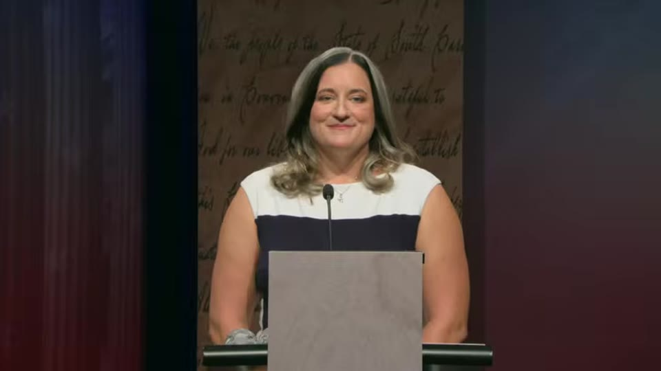
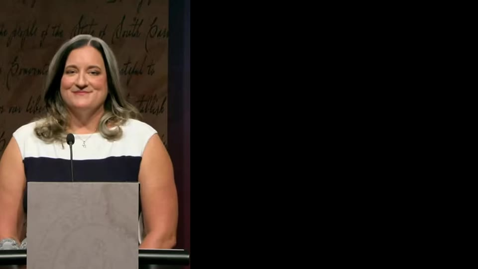
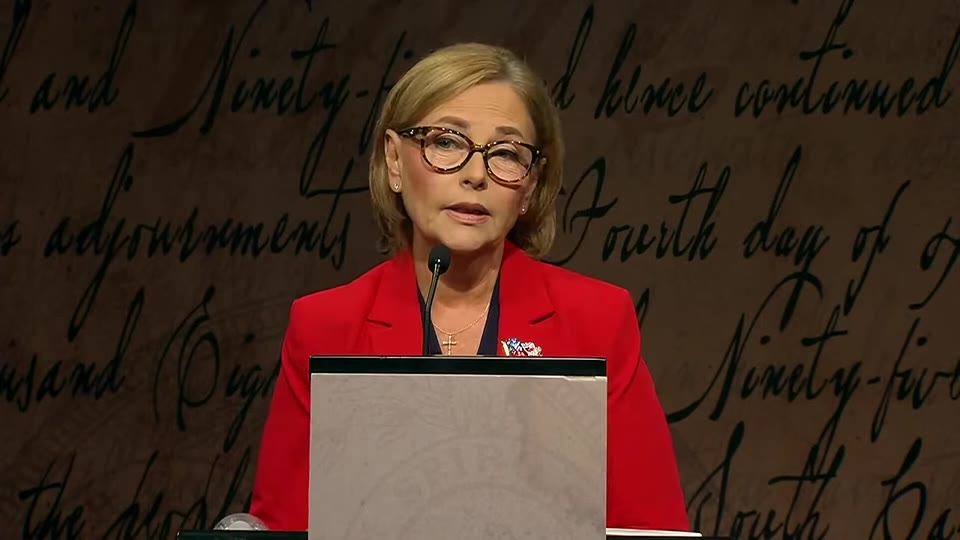
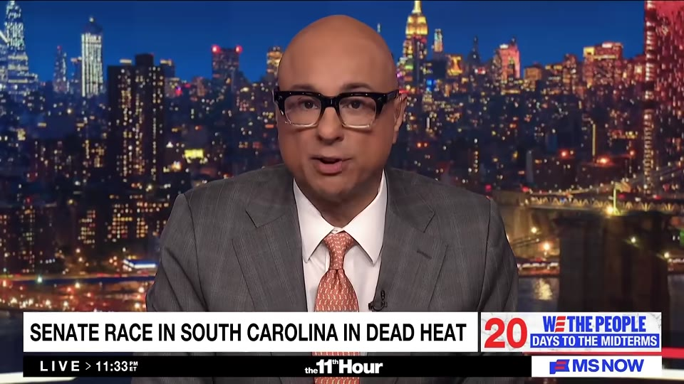
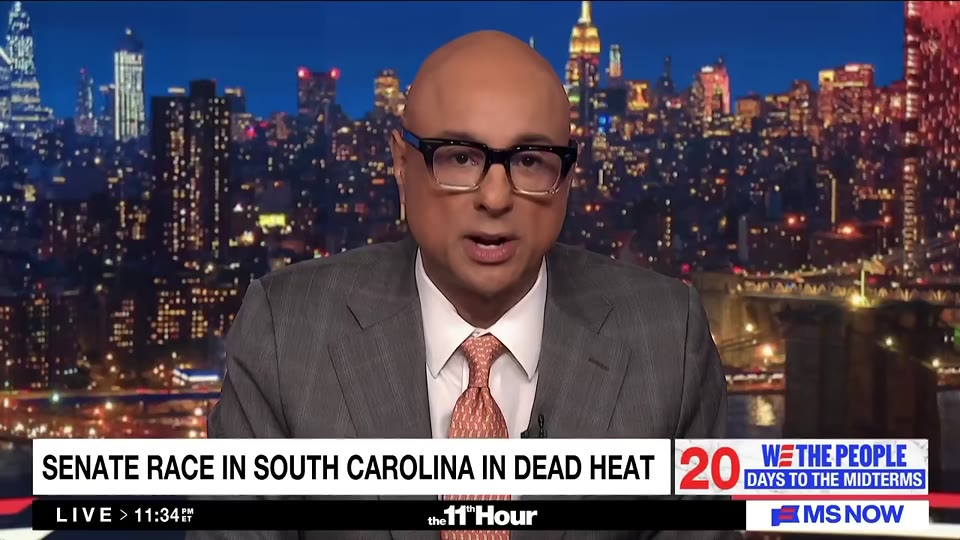
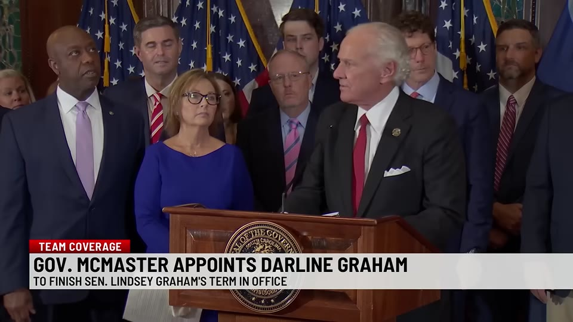
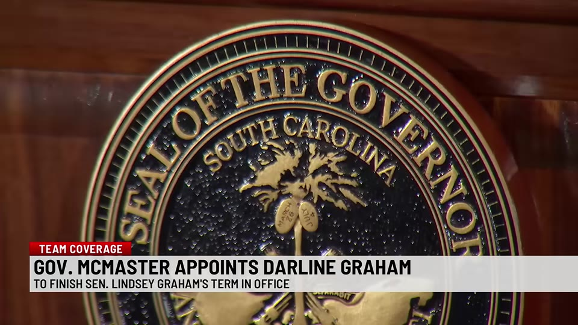
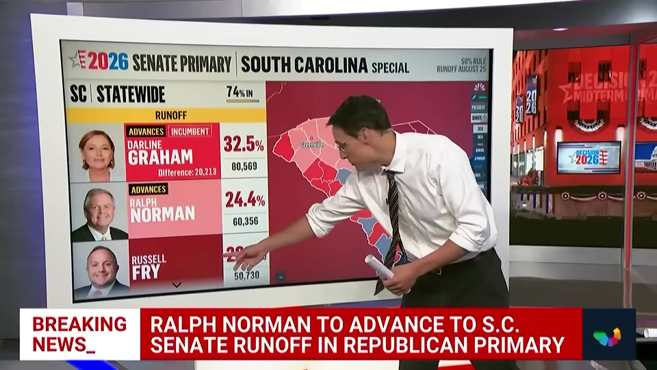

Video frames视频帧
27 videos, 300 keyframes and per-video face detection counts.
27 个视频、300 个关键帧与逐视频人脸检出统计。
3 datasets0 documents
Contents
27
Video corpus视频语料
27 videos with local filenames, byte sizes and duration.
300Keyframes关键帧
300 scene-change frames with face counts and bounding boxes.
27Per-video face summary逐视频人脸汇总
Frames extracted, frames with faces, largest face share.
逐视频帧 / Frames by video
U.S. Senate Debate | Election 2026
 00:00:10.400 · faces 100:00:17.667 · faces 000:00:17.700 · faces 0
00:00:10.400 · faces 100:00:17.667 · faces 000:00:17.700 · faces 0
00:00:45.267 · faces 1FULL DEBATE: Vote for America: South Carolina Republican Senate Runoff Debate | NEWSMAX

Sen. Graham, Rep. Norman trade jabs over who they're each receiving support from


SC Senate debate: Andrews, Graham and Whitner clash on gas, debt


Senate candidates debate economy, war on Iran, AI and more in South Carolina

00:00:27.160 · faces 1 00:00:35.769 · faces 4
00:00:35.769 · faces 4
00:00:39.640 · faces 1 00:00:44.745 · faces 1
00:00:44.745 · faces 1Annie Andrews Launch Video: "Unafraid"
 00:00:02.711 · faces 4
00:00:02.711 · faces 4 00:00:04.963 · faces 3
00:00:04.963 · faces 3 00:00:06.924 · faces 3
00:00:06.924 · faces 3 00:00:08.342 · faces 2
00:00:08.342 · faces 2South Carolina doctor mounts Senate bid against Lindsey Graham: "I don't mind being an underdog"

Annie Andrews gives speech after winning Democratic nomination for US Senate
S.C. Democratic U.S. Senate Nominee Dr. Annie Andrews Kicks Off 'Gas, Grits, and Groceries' Tour
Dr. Annie Andrews joins WBTV's streaming newscast for a live interview
 00:00:20.487 · faces 3
00:00:20.487 · faces 3 00:00:36.470 · faces 1
00:00:36.470 · faces 1 00:01:18.045 · faces 3
00:01:18.045 · faces 3 00:01:43.737 · faces 1
00:01:43.737 · faces 1Full speech: Annie Andrews projected winner in South Carolina Senate race
Annie Andrews addresses supporters after projected win in South Carolina Senate race
Democrat Annie Andrews running to flip a Senate seat in deep-red South Carolina
00:00:05.372 · faces 2 00:00:17.851 · faces 2
00:00:17.851 · faces 2

00:00:12.079 · faces 100:00:17.851 · faces 2
00:00:36.637 · faces 1Democrat Annie Andrews projected to win South Carolina Senate seat
Darline Graham Nordone appointed to fill Lindsey Graham's seat | full video
Darline Graham sworn in as U.S. senator, replacing her late brother Lindsey
 00:00:42.676 · faces 2
00:00:42.676 · faces 2 00:00:47.881 · faces 2
00:00:47.881 · faces 2 00:01:03.397 · faces 1
00:01:03.397 · faces 1 00:03:38.518 · faces 2
00:03:38.518 · faces 2Darline Graham Nordone, sister of Lindsey Graham, appointed interim senator
 00:00:47.147 · faces 7
00:00:47.147 · faces 7 00:01:00.827 · faces 1
00:01:00.827 · faces 1
00:01:03.363 · faces 9
00:01:06.900 · faces 0Lindsey Graham's sister, Darline, announces bid for full Senate term in South Carolina


Senator Darline Graham Primary Night Speech
Sen. Darline Graham delivers remarks on special GOP primary election night
FULL SPEECH: Darline Graham Speaks to an Excited Myrtle Beach Crowd Before President Trump - 8/21/26
Sen. Darline Graham Speaks at Trump Myrtle Beach Rally | S.C. 2026
Graham wins South Carolina Republican Senate primary runoff, NBC News projects

Sen. Darline Graham (R-SC) Full Concession Speech
Norman, Graham advance to South Carolina GOP Senate runoff
 00:00:22.990 · faces 4
00:00:22.990 · faces 4 00:02:06.293 · faces 5
00:02:06.293 · faces 5
00:02:17.871 · faces 4 00:03:20.367 · faces 5
00:03:20.367 · faces 5